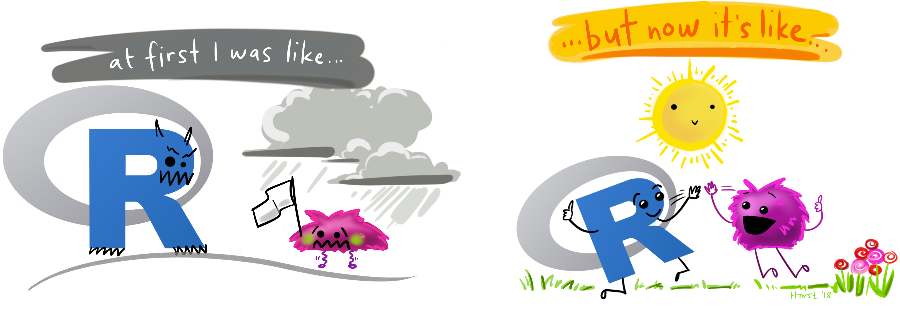

Tipps zum R Lernen¶
Der Anfang ist schwer¶
R unterscheidet sich deutlich von der Software, mit der Kommunikationswissenschaftler:innen bisher gearbeitet haben. Es handelt sich nicht um ein proprietäres Programm, sondern um eine Programmiersprache. Dadurch werden die Grenzen dessen, was möglich ist, immens erweitert. Da fällt der Ein- bzw. Umstieg am Anfang vielleicht erstmal schwer und sicherlich gehört beim Erlernen einer neuen Kompetenz immer auch eine gewisse Frustrationstoleranz dazu. Das nicht alles von Anfang an klappt, ist ganz normal. Es ist sehr wichtig, sich diesen Umstand zu verdeutlichen.
Nützliche Hinweise¶
Holen Sie sich die Hilfe, die Sie brauchen!
Welche Lern-Ressourcen für Sie die richtigen sind, können Sie selbst am besten entscheiden. Der eine lernt vielleicht leichter mit einem interaktiven Kurs, der andere mit einem Buch. Eine besonders hilfreiche Methode kann auch “Vier Augen / ein Rechner” sein, bei dem Sie gemeinsam mit einer/m Kommilitonen/in gemeinsam am Computer üben.Lesen Sie Fehlermeldungen aufmerksam durch.
Falls ein Skript mal nicht wie erwartet funktioniert, liefert ihnen die Fehlermeldung oft einen ersten Hinweis darauf, woran es liegen könnte. Das gilt meistens - aber leider nicht immer. Denn nicht alle Autoren der unterschiedlichen R-Pakete schreiben Fehlermeldungen die auch für Einsteiger verständlich sind.Schauen Sie genau hin.
Achten Sie genau auf die Syntax: Häufige Fehler sind vergessene oder doppelte Klammern{[()]}, Anführungszeichen"oder Kommata,.Googeln ist eine Kompetenz und ausdrücklich erwünscht!
Wenn Sie bei einer Fragestellung feststecken, die Hilfe sie auch nicht weiterbringt versuchen Sie ihre Fehlermeldung oder Ihre Fragestellung zu ergoogeln. Sie sind womöglich nicht der/die erste, die vor diesem Problem steht.Beachten Sie die 15-Minuten-Regel.
Wenn Sie auf ein Problem stoßen, versuchen Sie 15 Minuten lang, es zu lösen. Sollten Sie es bis dahin nicht geschafft haben, fragen Sie jemanden um Hilfe! Wenn Sie gerade an einem Seminar teilnehmen können das natürlich bevorzugt Ihre Kommiliton:innen, Tutor:innen oder Dozierenden sein. Aber auch im Internet gibt es viele Foren z.B. stackoverflow.